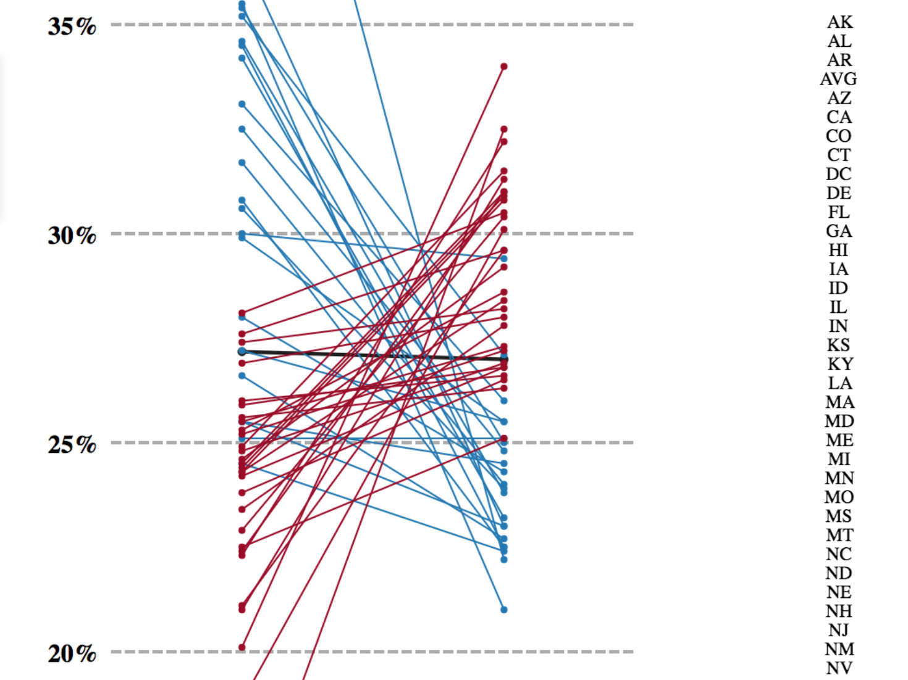

Data-Driven Documents
JavaScript library for visualizing data with HTML, SVG, and CSS. Created in 2011 by Mike Bostock, Jason Davies , Jeffrey Heer, Vadim Ogievetsky, and community
How to make sense out of data
YearStart,YearEnd,LocationAbbr,LocationDesc,Datasource,Class,Topic,
Question,Data_Value_Unit,Data_Value_Type,Data_Value,Data_Value_Alt,
Data_Value_Footnote_Symbol,Data_Value_Footnote,Low_Confidence_Limit,
High_Confidence_Limit ,Sample_Size,Total,Age(months),Gender,Race/Ethnicity,
GeoLocation,ClassID,TopicID,QuestionID,DataValueTypeID,LocationID,
StratificationCategory1,Stratification1,StratificationCategoryId1,StratificationID1
2008,2008,AL,Alabama,"Women, Infants, and Children Participant and Program
Characteristics",Obesity / Weight Status,Obesity / Weight Status,Percent of WIC
children aged 2 to 4 years who have an overweight classification,,Value,15.4,15.4,,,
15.1,15.8,43287,Total,,,,"(32.84057112200048, -86.63186076199969)",OWS,OWS1,
Q040,VALUE,01,Total,Total,OVR,OVERALL
2008,2008,AL,Alabama,"Women, Infants, and Children Participant and Program
Characteristics",Obesity / Weight Status,Obesity / Weight Status,Percent of WIC
children aged 2 to 4 years who have an overweight classification,,Value,15.5,15.5,,,
15.0,16.0,21912,,,Male,,"(32.84057112200048, -86.63186076199969)",OWS,OWS1,
Q040,VALUE,01,Gender,Male,GEN,MALE
Choosing the right tools to tell the story
Obesity is, on average, inversely proportional to the average education of population
How to use D3
(1) Link D3 library directly in your page
<script src="https://d3js.org/d3.v5.min.js"></script>
(2) Install a library on your computer
npm install d3
(3) Or download the latest version @ https://github.com/d3/d3/releases/latest
An example
<div id="content"></div>
...
d3.select("#content")
.selectAll("p")
.data([8, 15, 16, 23, 42])
.enter().append("p")
.text(function(d) { return "I’m number " + d + "!"; });
An example
<svg width="760" height="140">
<g transform="translate(70, 70)">
<circle r="40" />
<circle r="40" cx="120" />
...
</g>
</svg>
...
d3.selectAll('circle')
.each(function(d, i) {
const odd = i % 2 === 1;
d3.select(this)
.style('fill', odd ? 'orange' : '#ddd')
.attr('r', odd ? 40 : 20);
});